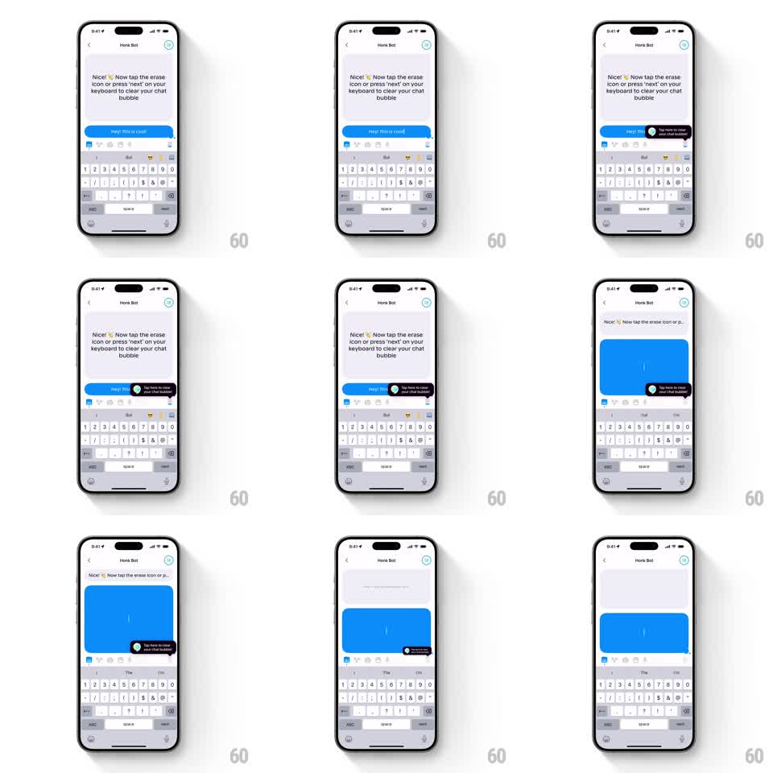

Media
Frame-by-frame

Rebuild this interaction 1:1: Honk's clear-chat onboarding - a springy black tooltip pops up pointing at the erase button ("Tap here to clear your chat bubble"), the blue bubble empties when cleared, and a confetti emoji burst celebrates.

Rebuild this interaction 1:1: Honk's clear-chat onboarding - a springy black tooltip pops up pointing at the erase button ("Tap here to clear your chat bubble"), the blue bubble empties when cleared, and a confetti emoji burst celebrates.
## Integration
Integration: stack-agnostic spec - springs given as stiffness/damping, timed motions as duration + curve; map every value to your framework and animation library of choice.
## Scene
Honk Bot chat, keyboard open. Honk Bot's message: "Nice! Now tap the erase icon or press 'next' on your keyboard to clear your chat bubble". Below, the user's blue bubble ("Hey! This is cool"). The toolbar above the keyboard includes an erase icon; a black pill tooltip with an eraser glyph anchors to it.
## Motion spec
Pattern: springy anchored tooltip with clear-and-celebrate payoff.
- The tooltip springs in from the erase button (scale 0.5 -> 1.1 -> 1, spring ~340/14, 300ms), anchored with a small tail; it nudges gently (translateY +-2pt, 1.5s loop) until acted on.
- On clear (erase tap or keyboard "next"): the bubble's text scrubs out right-to-left (150ms), the bubble itself shrinks to its empty resting size with the resize spring (stiffness ~380, damping ~22), and the tooltip fades (200ms).
- Celebration: a burst of emoji confetti (party, sparkles) erupts from the cleared bubble's position (10-14 pieces, radial, 800ms with float and fade).
- The bubble then shows its faint placeholder state, ready for new typing.
## Calibration
- The tooltip is black with white text and a small eraser icon - it must read as a coach mark, not a message.
- Confetti fires only after the clear completes, not on the tooltip.
## Reduced motion
Tooltip fades in; clear is instant; no confetti.
## Don't miss
- Two clear paths must both work: toolbar erase icon and the keyboard's "next" key.
- Honk Bot's instruction message stays put; only the user's bubble changes.